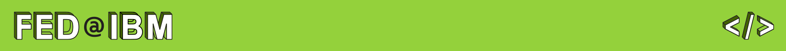

FED@IBM Littleton Branch
Branch Leaders:
What Are FED Dates?
Our goal is to create a culture of sharing, cross-pollination of ideas, support, and camaraderie between FEDs regardless of their business unit or day-to-day teams.
Our Wednesday meetings, which we call the “FED Date”, are informal, in-person only, and typically involve a kind of code-along where someone shares an idea, project, or tool they’re excited about and lets everyone get a little bit of hands-on experience playing with it. No prior experience or skill level is required; just curiosity, excitement, and a willingness to share with the community.